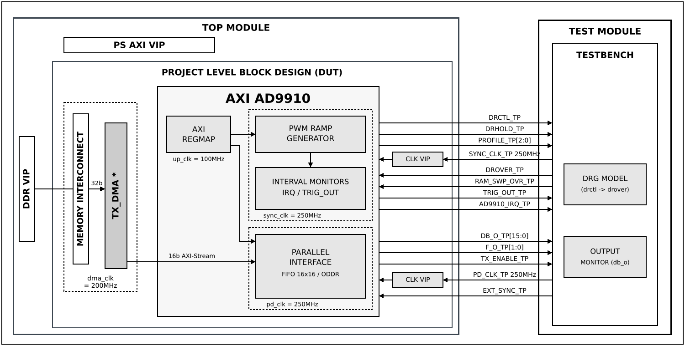

AD9910
Overview
The purpose of this testbench is to validate the axi_ad9910 IP core, the
FPGA-side controller for the AD9910 Direct Digital Synthesizer (DDS), as used
by the projects/admfm8000_evalz reference design.
The IP has two independent functions, and the testbench has one configuration for each:
Digital Ramp Generator (DRG) control —
drctlis generated as an open-loop PWM waveform from two programmed sync_clk cycle counts,DRCTL_PERIODandDRCTL_WIDTH, with optional start delay, burst grouping, stop modes, interval monitors and interrupts.droveris a status input only; it feeds the interrupt and trigger logic and drives no state machine.Parallel data interface — 16-bit samples are streamed from DDR by a DMA over AXI-Stream, through the IP’s asynchronous FIFO, and out on
db_o[15:0]/tx_enableat a programmable update rate or on an external trigger.f_o[1:0]is driven statically from a register.
The entire HDL documentation can be found here ADMFM8000-EVALZ HDL project.
Block design
The testbench block design includes the axi_ad9910 IP core along with VIPs
used for clocking, reset, PS and DDR simulations. The sync_clk and
pd_clk signals are generated directly in the testbench at 250 MHz, standing
in for the clock outputs of the AD9910 device, and reach the IP through
pass-through clock VIPs. The IP is instantiated with MEASURE_CLKS_EN=1, so
the sync_clk and pd_clk monitor registers are available.
The block design depends on the MODE parameter:
DRG — the AXI-Stream input of
axi_ad9910is tied off and no DMA is instantiated.PAR_IF — a TX
axi_dmacreads samples from the DDR VIP over AXI-MM and drives theaxi_ad9910AXI-Stream input.
In both modes the DDS control and data outputs (drctl, drhold,
profile, db_o, f_o, tx_enable, trig_out and the IP
interrupt) are brought out of the block design and observed directly by the
test program, which also drives the drover, ram_swp_ovr and
ext_sync inputs.
Block diagram
The data path and clock domains are depicted in the below diagram:


Legend
*instantiated only in PAR_IF mode (cfg2_par_if)
Configuration parameters and modes
The following parameters of this project can be configured:
MODE: Defines which function of the
axi_ad9910IP is under test. Options: DRG - Digital Ramp Generator control, PAR_IF - Parallel data interfacetx_dma_cfg: The
axi_dmacconfiguration, used only in PAR_IF mode. The DMA reads 32-bit words from DDR and emits 16-bit AXI-Stream beats (DMA_DATA_WIDTH_SRC 32,DMA_DATA_WIDTH_DEST 16), matching the 16-bits_axisinput of the IP.
Configuration files
The following configuration files are available:
Configuration mode |
Parameters |
|---|---|
MODE |
|
cfg1_drg |
DRG |
cfg2_par_if |
PAR_IF |
Tests
The following test program files are available:
Test program |
Usage |
|---|---|
test_program_drg |
Tests the DRG control function (PWM ramp generator, bursts, stop modes, interval monitors, interrupts). |
test_program_par_if |
Tests the parallel data interface (DMA to |
Available configurations & tests combinations
Each test program must be paired with the configuration of the same mode:
Configuration |
Test |
Build command |
|---|---|---|
cfg1_drg |
test_program_drg |
make CFG=cfg1_drg TST=test_program_drg |
cfg2_par_if |
test_program_par_if |
make CFG=cfg2_par_if TST=test_program_par_if |
Error
Mixing a wrong pair of CFG and TST is not supported. The PAR_IF test program relies on the TX DMA, which only the PAR_IF configuration instantiates. Please use the matching mode.
CPU/Memory interconnect addresses
Below are the CPU/Memory interconnect addresses used in this project:
Instance |
Address |
|---|---|
axi_intc |
0x4120_0000 |
axi_ad9910 |
0x44A0_0000 |
tx_dma * |
0x44A3_0000 |
ddr_axi_vip |
0x8000_0000 |
Legend
*instantiated only in PAR_IF mode (cfg2_par_if)
Interrupts
Below are the Programmable Logic interrupts used in this project:
Instance name |
HDL |
|---|---|
tx_dma * |
13 |
Legend
*instantiated only in PAR_IF mode (cfg2_par_if)
The axi_ad9910 interrupt is not routed to the interrupt controller. It is
brought out of the block design as ad9910_irq and checked directly by the
test program.
Test stimulus
Both test programs set the logger to ADI_VERBOSITY_NONE, so a passing run
prints only the randomization state, ==== ALL TESTS PASSED ==== and
Testbench done!. Errors are always printed. When a check fails, the final
summary names the failing test cases, e.g.
==== SOME TESTS FAILED ==== (failing: TC14). To see the per-test progress
messages, raise the verbosity to ADI_VERBOSITY_LOW in the test program.
All axi_ad9910 register access goes through the ad9910_api driver, so
neither test program contains register offsets or field positions.
Environment bringup
The steps of the environment bringup, common to both test programs, are:
Print the randomization state, so that a failing run can be reproduced
Create the test harness environment
Start the environment
Assert the system reset
Extend the simulation watchdog (3 ms for DRG, 5 ms for PAR_IF)
Stop the environment
The steps of stopping the environment, common to both test programs, are:
Stop the test harness environment
Report the overall pass/fail status and the failing test cases, if any
test_program_drg
Because drctl is produced by deterministic counters, the duty-cycle checks
assert exact sync_clk cycle counts with no tolerance: a programmed period of
P and width of W must measure exactly P sync_clk cycles rising edge
to rising edge, and exactly W sync_clk cycles high. Most tests use a base
duty cycle of P=1000, W=400 (4 µs at 40%), sized so the waveforms stay
readable.
The only exception is any interval timed from an AXI register write. The IP’s up_clk to sync_clk control transfer starts only once per 64 up_clk cycles, so a write can wait up to 160 sync_clk cycles at the crossing. Such checks allow that much tolerance.
DRG model
The test program includes a behavioral model of the AD9910 digital ramp
generator that runs throughout the suite. It is a level-driven integrator:
while drctl is high the ramp counter steps up, while it is low the counter
steps down, and drover is asserted whenever the counter sits at a limit.
The DUT reads none of the model’s state. The model exists to supply a realistic
drover for the interrupt tests, to detect programming errors, and to show in
the waveform the ramp that each duty-cycle configuration produces.
The following parameters are fixed in the model:
DRG_LOWER_LIMIT: 1000 (ramp lower boundary)
DRG_UPPER_LIMIT: 5000 (ramp upper boundary)
DRG_STEP_SIZE: 20 (increment/decrement per sync_clk cycle)
DRG_RAMP_CYCLES: 200 (sync_clk cycles for one full limit-to-limit ramp)
The model supports two ramp shapes. The shape is selected in the AD9910 itself over SPI, not by this IP, so the test tells the model which one to emulate:
DRG_DWELL— the ramp parks at a limit untildrctlchanges level. This is the AD9910’s reset configuration and the suite’s default.DRG_SAWTOOTH— emulates no-dwell high: on reaching the upper limit the counter reloads the lower limit and ramps up again, while the downward direction still dwells. Used only in TC4 and in part of TC12.
With the completion checker armed, the model flags any ramp that has not reached
its limit when drctl changes level. That means the programmed interval was
shorter than DRG_RAMP_CYCLES. The checker is armed only in TC12, because
other tests program short intervals on purpose.
Register sanity (TC1)
Run the API sanity test: verify VERSION against its reset value and write/read back the SCRATCH register
Read and log the ID and DEVICE_INFO registers
Write a distinct pattern to each DRG register (DRCTL_PERIOD, DRCTL_WIDTH, BST_DELAY, RAMP_BURSTS, BURST_DELAY, MONITOR_MAX_PERIOD and the four IRQ/trigger interval match registers), then read each back and compare
Clear all of them back to zero
Reset release (TC2)
Clear RESET_CTRL. The core comes out of reset held, so software must release it
Read and log SYNC_CLK_CNT. The clock monitor only captures once per 65536 up_clk cycles (~655 µs), so its value is checked later, in TC16
Enable the DRG model in
DRG_DWELLshape, with the completion checker off
Simple mode (TC3)
With drctl_toggle_en cleared the PWM generator is bypassed:
Set
drctl_init=1and verifydrctlgoes highSet
drctl_init=0and verifydrctlgoes low
PWM basic operation (TC4)
Switch the DRG model to
DRG_SAWTOOTHProgram
P=1000,W=400and measure 6 consecutive duty cyclesVerify every high time is exactly 400 and every period exactly 1000 sync_clk cycles
Switch the DRG model back to
DRG_DWELL
Duty-cycle sweep (TC5)
Every point is measured over 4 duty cycles and checked exactly:
Duty sweep at
P=1000:W= 1, 50, 200, 400, 500, 600, 800, 950, 990.W=1covers the single-cycle width boundary in the RTLPeriod sweep at 50% duty:
P= 100, 250, 500, 1000, 2000, 4000Live reconfiguration: write
P=800,W=200without first clearing toggle mode, and verify the output converges on the new waveform
Width and period edge cases (TC6)
Each case exercises a distinct branch of the RTL:
W=0: verifydrctlstays low for 3 periodsW=P: verifydrctlstays high for 3 periodsW>P(W=1.5P): verifydrctlstays high for 3 periodsP=1: verifydrctltoggles every sync_clk cycle (1 cycle high, period of 2) and thatWis ignored
Start delay (TC7)
Measure the time from enabling the PWM to the first
drctlrising edge, with BST_DELAY set to 500 and then to 2500 sync_clk cyclesVerify the difference between the two is 2000 sync_clk cycles, within the 160 sync_clk cycle control-transfer tolerance. Taking the difference cancels the fixed register-write overhead
Note
A BST_DELAY value written while the ramp is stopped is only latched at the next period boundary, so the first restart after the write still uses the old value. Each measurement therefore runs a priming period with the new value before the timed stop/start.
Burst grouping (TC8)
With RAMP_BURSTS=2 and the base duty cycle, BURST_DELAY is swept over 500,
1000, 2000 and 4000 sync_clk cycles. For each value, 6 rising-edge gaps are
measured and the test checks that:
every high time is still exactly
W=400the gap inside a burst is exactly one period (1000)
exactly 3 gaps are burst boundaries
the extra boundary overhead beyond
P + BURST_DELAYis at most 16 sync_clk cycles
It then checks that the boundary overhead is the same at all four delays. A constant offset shows the delay is added, not scaled.
Stop modes (TC9)
RAMP_CFG=2(stop after period): let the one permitted period run, then verifydrctlstays low for 2 periods. WritingRAMP_CFG=0must restart the rampRAMP_CFG=1(stop after burst) withRAMP_BURSTS=3: let the burst run, then verifydrctlstays low for 2 periods. WritingRAMP_CFG=0must restart the ramp with the programmed period
DRHOLD passthrough (TC10)
Set and clear the DRHOLD bit, and verify the
drholdoutput follows it
Profile output (TC11)
Write all 8 values to the PROFILE register and verify each appears on
profile[2:0]
Ramp model and programming checker (TC12)
DRG_DWELLwith the completion checker armed,P=1000,W=500: both intervals are longer than a full ramp, so verify there are no truncations and at least 6droverrising edges over 4 periods (8 expected)DRG_DWELL,W=150: shorter than a full ramp, so verify that truncated up-ramps are detectedDRG_SAWTOOTH,P=1000,W=400: verify at least 3 retraces over 2 periods (4 expected), then stop the PWM and verify the ramp comes to rest at the lower limitSwitch the DRG model back to
DRG_DWELL
trig_out interval timing (TC13)
The interval monitor loads MONITOR_MAX_PERIOD and counts down, pulsing
trig_out when the counter equals the start or stop match value. In
max-period mode, with MONITOR_MAX_PERIOD=1000:
For start/stop match pairs 900/800, 800/400 and 500/100, verify two
trig_outpulses whose spacing is exactlySTART - STOPsync_clk cyclesWith both match values 0, verify no
trig_outpulse over 4000 sync_clk cycles
Interval monitor source selection (TC14)
The monitor source selects which event reloads the reference counter: every
period (0), every burst delay (1), or once per start (2, max-period). With
P=500, RAMP_BURSTS=4 and a start pulse only, trig_out pulses are
counted over 20 periods in each mode, and the test checks that:
max-period mode produces 1 to 3 pulses
period and burst-delay modes both produce pulses
period mode produces more pulses than burst-delay mode
Warning
TC14 currently fails. In period and burst-delay modes the reference
counter is loaded but never decremented, so it never reaches the match value
and no pulse is produced. Only max-period mode works. The same logic drives
the interval interrupts, which are affected in the same way. This is an
axi_ad9910 RTL issue, not a testbench issue, and TC14 is expected to pass
once it is fixed.
IRQ mask, table and write-1-to-clear (TC15)
With IRQ_MASK cleared, pulse
ram_swp_ovrand verify the interrupt output stays low while IRQ_TABLE latches the eventUnmask the latched source and verify the interrupt output goes high
Write 1 to the IRQ_TABLE bit and verify both the latch and the interrupt clear
Run 10 duty cycles with
RAMP_BURSTS=2and verifybursts_completeis latched in IRQ_TABLE. Internalend_period/bursts_completepulses are counted alongside, so a failure shows whether the event was never generated or was generated but not latchedStart the ramp, clear IRQ_TABLE, and verify the
droverbit latches from the model’s ramp within 3 periods. Clearing after the start ensures the latch comes from the ramp, not from the setup
Clock monitors (TC16)
This test runs last, once the first 65536-up_clk monitor window has elapsed:
Read SYNC_CLK_CNT and PD_CLK_COUNT and verify both report a running clock
test_program_par_if
The IP has no transfer-status register, so every transfer is verified by an
output monitor. It captures db_o[15:0] on each pd_clk cycle where
tx_enable is high, one entry per emitted word, and the captures are compared
sample-for-sample against the samples written to DDR.
A few properties of the data path that the tests rely on:
The transfer engine emits one 16-bit word per trigger.
PAR_UPDATE_RATE is a period divider: with a value of
Ra word is emitted everyR+1pd_clk cycles, soR=0is the fastest setting (one word per pd_clk). It is ignored in external-trigger mode.The DMA unpacks each 32-bit DDR word into two 16-bit beats, low half first.
Between transfers the test waits for
tx_enableto stay low for longer than one emission period. This drains any residual FIFO content, so each capture starts from an empty FIFO.
After the environment bringup, the core reset is released by clearing RESET_CTRL.
Register sanity (TC1)
Run the API sanity test: verify VERSION against its reset value and write/read back the SCRATCH register
Verify CONFIG reports
MEASURE_CLKS_EN=1Write/read back PAR_UPDATE_RATE, F_CFG and the
enable_p_ifbit of UPDATE_CTRL
Single transfer and width mapping (TC2)
Write one 32-bit DDR word holding two known samples and transfer it
Verify both samples appear in order, which pins down the 32-bit to 16-bit width and ordering that every later test relies on
Multi-word stream (TC3)
Transfer 6 distinct samples and verify they appear in order
Continuous streaming (TC4)
Transfer 32 sequential samples at a fast update rate and verify they all appear in order
Backpressure (TC5)
Transfer 64 samples, four times the 16-entry FIFO depth, at a slow update rate, so the FIFO fills and backpressures the DMA
Verify no sample is lost or reordered
Update-rate change (TC6)
Time a full 128-sample transfer at update rate 200 and then at 20
Verify the faster rate completes the transfer more than twice as quickly
External trigger (TC7)
Select external-trigger mode, load 4 samples into the FIFO and verify nothing is emitted before any trigger
For each sample, re-arm the external sync through EXT_TRIG_CFG (arming is edge-sensitive, so the arm bit is cleared and set again), pulse
ext_sync, and verify exactly one new word is emittedVerify all 4 samples appear in order
F_CFG to f_o (TC8)
Write all 4 values to F_CFG and verify each appears on
f_o[1:0]
Ramp data integrity (TC9)
Stream a 256-sample 16-bit sawtooth-up, triangle and sawtooth-down ramp at the fastest update rate
Verify each ramp sample-for-sample
Building the testbench
The testbench is built upon ADI’s generic HDL reference design framework. ADI does not distribute compiled files of these projects so they must be built from the sources available here and here, with the specified hierarchy described Set up the Testbenches repository. To get the source you must clone the HDL repository, and then build the project as follows:.
Linux/Cygwin/WSL
Example 1
Build all the possible combinations of tests and configurations, using only the command line.
user@analog:~$
cd testbenches/project/ad9910
user@analog:~/testbenches/project/ad9910$
make
Example 2
Build all the possible combinations of tests and configurations, using the Vivado GUI. This command will launch Vivado, will run the simulation and display the waveforms.
user@analog:~$
cd testbenches/project/ad9910
user@analog:~/testbenches/project/ad9910$
make MODE=gui
Example 3
Build a particular combination of test and configuration, using the Vivado GUI. This command will launch Vivado, will run the simulation and display the waveforms.
user@analog:~$
cd testbenches/project/ad9910
user@analog:~/testbenches/project/ad9910$
make CFG=cfg1_drg TST=test_program_drg MODE=gui
Example 4
Build the parallel data interface test:
user@analog:~$
cd testbenches/project/ad9910
user@analog:~/testbenches/project/ad9910$
make CFG=cfg2_par_if TST=test_program_par_if MODE=gui
The built projects can be found in the runs folder, where each configuration
specific build has it’s own folder named after the configuration file’s name.
Example: if the following command was run for a single configuration in the
clean folder (no runs folder available):
make CFG=cfg1_drg
Then the subfolder under runs name will be:
cfg1_drg
Resources
More information
Support
Analog Devices, Inc. will provide limited online support for anyone using the reference design with ADI components via the EngineerZone FPGA reference designs forum.
It should be noted, that the older the tools’ versions and release branches are, the lower the chances to receive support from ADI engineers.